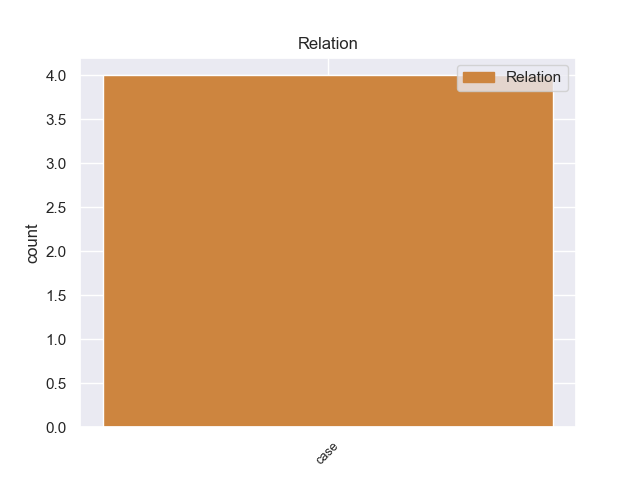
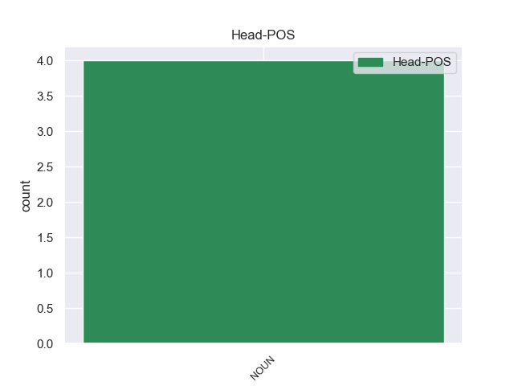
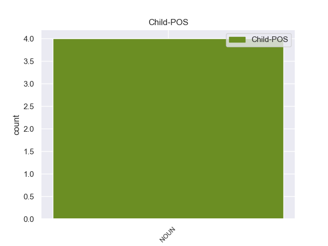

Distribution of features within this leaf



Agreement Rules sorted by frequency.
- When the dependent token is the case marking(case) of the head token, and the dependent token is NOUN.
1 Son _ _ _ _ 0 _ _ _
2 guitarras _ _ _ _ 0 _ _ _
3 especiales _ _ _ _ 0 _ _ _
4 o _ _ _ _ 0 _ _ _
5 adaptadores _ _ _ _ 0 _ _ _
6 para _ _ _ _ 0 _ _ _
7 guitarras _ _ _ _ 0 _ _ _
8 convencionales _ _ _ _ 0 _ _ _
9 que _ _ _ _ 0 _ _ _
10 permiten permiten NOUN _ Mood=Ind|Number=Sing|Person=3|Tense=Past|VerbForm=Fin 0 _ _ _
11 controlar _ _ _ _ 0 _ _ _
12 un _ _ _ _ 0 _ _ _
13 sintetizador _ _ _ _ 0 _ _ _
14 vía _ _ _ _ 0 _ _ _
15 MIDI _ _ _ _ 0 _ _ _
16 ( _ _ _ _ 0 _ _ _
17 protocolo _ _ _ _ 0 _ _ _
18 de _ _ _ _ 0 _ _ _
19 transmisión _ _ _ _ 0 _ _ _
20 de _ _ _ _ 0 _ _ _
21 datos _ _ _ _ 0 _ _ _
22 que _ _ _ _ 0 _ _ _
23 permite permite NOUN _ Mood=Ind|Number=Sing|Person=3|Tense=Past|VerbForm=Fin 10 case _ _
24 enviar _ _ _ _ 0 _ _ _
25 información _ _ _ _ 0 _ _ _
26 musical _ _ _ _ 0 _ _ _
27 entre _ _ _ _ 0 _ _ _
28 distintos _ _ _ _ 0 _ _ _
29 dispositivos _ _ _ _ 0 _ _ _
30 conectados _ _ _ _ 0 _ _ _
31 por _ _ _ _ 0 _ _ _
32 medio _ _ _ _ 0 _ _ _
33 de _ _ _ _ 0 _ _ _
34 cables _ _ _ _ 0 _ _ _
35 ) _ _ _ _ 0 _ _ _
36 . _ _ _ _ 0 _ _ _
Disagree Examples:
1 La _ _ _ _ 0 _ _ _
2 presencia _ _ _ _ 0 _ _ _
3 de _ _ _ _ 0 _ _ _
4 una _ _ _ _ 0 _ _ _
5 tecnología _ _ _ _ 0 _ _ _
6 ociosa _ _ _ _ 0 _ _ _
7 proveniente _ _ _ _ 0 _ _ _
8 de _ _ _ _ 0 _ _ _
9 la _ _ _ _ 0 _ _ _
10 extinta _ _ _ _ 0 _ _ _
11 Unión _ _ _ _ 0 _ _ _
12 Soviética _ _ _ _ 0 _ _ _
13 en _ _ _ _ 0 _ _ _
14 las _ _ _ _ 0 _ _ _
15 empresas _ _ _ _ 0 _ _ _
16 clorososa _ _ _ _ 0 _ _ _
17 y _ _ _ _ 0 _ _ _
18 la _ _ _ _ 0 _ _ _
19 electroquímica electroquímica NOUN _ Mood=Ind|Number=Sing|Person=3|Tense=Pres|VerbForm=Fin 33 case _ _
20 " _ _ _ _ 0 _ _ _
21 Elpidio _ _ _ _ 0 _ _ _
22 Sosa _ _ _ _ 0 _ _ _
23 " _ _ _ _ 0 _ _ _
24 han _ _ _ _ 0 _ _ _
25 provocado _ _ _ _ 0 _ _ _
26 que _ _ _ _ 0 _ _ _
27 en _ _ _ _ 0 _ _ _
28 la _ _ _ _ 0 _ _ _
29 ciudad _ _ _ _ 0 _ _ _
30 se _ _ _ _ 0 _ _ _
31 forme _ _ _ _ 0 _ _ _
32 una _ _ _ _ 0 _ _ _
33 neblina neblina NOUN _ Mood=Ind|Number=Sing|Person=3|Tense=Past|VerbForm=Fin 0 _ _ _
34 de _ _ _ _ 0 _ _ _
35 gases _ _ _ _ 0 _ _ _
36 contaminantes _ _ _ _ 0 _ _ _
37 a _ _ _ _ 0 _ _ _
38 diario _ _ _ _ 0 _ _ _
39 . _ _ _ _ 0 _ _ _
1 Se _ _ _ _ 0 _ _ _
2 halla _ _ _ _ 0 _ _ _
3 a _ _ _ _ 0 _ _ _
4 una _ _ _ _ 0 _ _ _
5 distancia _ _ _ _ 0 _ _ _
6 aproximada _ _ _ _ 0 _ _ _
7 de _ _ _ _ 0 _ _ _
8 entre _ _ _ _ 0 _ _ _
9 1,5 _ _ _ _ 0 _ _ _
10 y _ _ _ _ 0 _ _ _
11 2,0 _ _ _ _ 0 _ _ _
12 kiloparsecs _ _ _ _ 0 _ _ _
13 de _ _ _ _ 0 _ _ _
14 el _ _ _ _ 0 _ _ _
15 Sol _ _ _ _ 0 _ _ _
16 según _ _ _ _ 0 _ _ _
17 diversos _ _ _ _ 0 _ _ _
18 científicos _ _ _ _ 0 _ _ _
19 , _ _ _ _ 0 _ _ _
20 lo _ _ _ _ 0 _ _ _
21 cual _ _ _ _ 0 _ _ _
22 junto _ _ _ _ 0 _ _ _
23 con _ _ _ _ 0 _ _ _
24 su _ _ _ _ 0 _ _ _
25 posición _ _ _ _ 0 _ _ _
26 en _ _ _ _ 0 _ _ _
27 el _ _ _ _ 0 _ _ _
28 cielo _ _ _ _ 0 _ _ _
29 indica _ _ _ _ 0 _ _ _
30 que _ _ _ _ 0 _ _ _
31 pertenece _ _ _ _ 0 _ _ _
32 posiblemente _ _ _ _ 0 _ _ _
33 a _ _ _ _ 0 _ _ _
34 la _ _ _ _ 0 _ _ _
35 asociación _ _ _ _ 0 _ _ _
36 estelar _ _ _ _ 0 _ _ _
37 Sagittarius _ _ _ _ 0 _ _ _
38 OB1 _ _ _ _ 0 _ _ _
39 , _ _ _ _ 0 _ _ _
40 la _ _ _ _ 0 _ _ _
41 misma _ _ _ _ 0 _ _ _
42 a _ _ _ _ 0 _ _ _
43 la _ _ _ _ 0 _ _ _
44 que _ _ _ _ 0 _ _ _
45 pertenece _ _ _ _ 0 _ _ _
46 por _ _ _ _ 0 _ _ _
47 ejemplo _ _ _ _ 0 _ _ _
48 la _ _ _ _ 0 _ _ _
49 Nebulosa _ _ _ _ 0 _ _ _
50 de _ _ _ _ 0 _ _ _
51 la _ _ _ _ 0 _ _ _
52 Laguna _ _ _ _ 0 _ _ _
53 , _ _ _ _ 0 _ _ _
54 y _ _ _ _ 0 _ _ _
55 su _ _ _ _ 0 _ _ _
56 luminosidad luminosidad NOUN _ Mood=Ind|Number=Sing|Person=3|Tense=Pres|VerbForm=Fin 78 case _ _
57 de _ _ _ _ 0 _ _ _
58 acuerdo _ _ _ _ 0 _ _ _
59 con _ _ _ _ 0 _ _ _
60 diversos _ _ _ _ 0 _ _ _
61 estudios _ _ _ _ 0 _ _ _
62 ha _ _ _ _ 0 _ _ _
63 sido _ _ _ _ 0 _ _ _
64 estimada _ _ _ _ 0 _ _ _
65 entre _ _ _ _ 0 _ _ _
66 200.000 _ _ _ _ 0 _ _ _
67 y _ _ _ _ 0 _ _ _
68 300.000 _ _ _ _ 0 _ _ _
69 veces _ _ _ _ 0 _ _ _
70 la _ _ _ _ 0 _ _ _
71 de _ _ _ _ 0 _ _ _
72 el _ _ _ _ 0 _ _ _
73 Sol _ _ _ _ 0 _ _ _
74 , _ _ _ _ 0 _ _ _
75 lo _ _ _ _ 0 _ _ _
76 que _ _ _ _ 0 _ _ _
77 la _ _ _ _ 0 _ _ _
78 sitúa sitúa NOUN _ Mood=Ind|Number=Sing|Person=3|Tense=Past|VerbForm=Fin 0 _ _ _
79 entre _ _ _ _ 0 _ _ _
80 las _ _ _ _ 0 _ _ _
81 estrellas _ _ _ _ 0 _ _ _
82 más _ _ _ _ 0 _ _ _
83 luminosas _ _ _ _ 0 _ _ _
84 conocidas _ _ _ _ 0 _ _ _
85 . _ _ _ _ 0 _ _ _
1 Se _ _ _ _ 0 _ _ _
2 halla _ _ _ _ 0 _ _ _
3 a _ _ _ _ 0 _ _ _
4 una _ _ _ _ 0 _ _ _
5 distancia _ _ _ _ 0 _ _ _
6 aproximada _ _ _ _ 0 _ _ _
7 de _ _ _ _ 0 _ _ _
8 entre _ _ _ _ 0 _ _ _
9 1,5 _ _ _ _ 0 _ _ _
10 y _ _ _ _ 0 _ _ _
11 2,0 _ _ _ _ 0 _ _ _
12 kiloparsecs _ _ _ _ 0 _ _ _
13 de _ _ _ _ 0 _ _ _
14 el _ _ _ _ 0 _ _ _
15 Sol _ _ _ _ 0 _ _ _
16 según _ _ _ _ 0 _ _ _
17 diversos _ _ _ _ 0 _ _ _
18 científicos _ _ _ _ 0 _ _ _
19 , _ _ _ _ 0 _ _ _
20 lo _ _ _ _ 0 _ _ _
21 cual _ _ _ _ 0 _ _ _
22 junto _ _ _ _ 0 _ _ _
23 con _ _ _ _ 0 _ _ _
24 su _ _ _ _ 0 _ _ _
25 posición _ _ _ _ 0 _ _ _
26 en _ _ _ _ 0 _ _ _
27 el _ _ _ _ 0 _ _ _
28 cielo _ _ _ _ 0 _ _ _
29 indica _ _ _ _ 0 _ _ _
30 que _ _ _ _ 0 _ _ _
31 pertenece _ _ _ _ 0 _ _ _
32 posiblemente _ _ _ _ 0 _ _ _
33 a _ _ _ _ 0 _ _ _
34 la _ _ _ _ 0 _ _ _
35 asociación _ _ _ _ 0 _ _ _
36 estelar _ _ _ _ 0 _ _ _
37 Sagittarius _ _ _ _ 0 _ _ _
38 OB1 _ _ _ _ 0 _ _ _
39 , _ _ _ _ 0 _ _ _
40 la _ _ _ _ 0 _ _ _
41 misma _ _ _ _ 0 _ _ _
42 a _ _ _ _ 0 _ _ _
43 la _ _ _ _ 0 _ _ _
44 que _ _ _ _ 0 _ _ _
45 pertenece _ _ _ _ 0 _ _ _
46 por _ _ _ _ 0 _ _ _
47 ejemplo _ _ _ _ 0 _ _ _
48 la _ _ _ _ 0 _ _ _
49 Nebulosa _ _ _ _ 0 _ _ _
50 de _ _ _ _ 0 _ _ _
51 la _ _ _ _ 0 _ _ _
52 Laguna _ _ _ _ 0 _ _ _
53 , _ _ _ _ 0 _ _ _
54 y _ _ _ _ 0 _ _ _
55 su _ _ _ _ 0 _ _ _
56 luminosidad _ _ _ _ 0 _ _ _
57 de _ _ _ _ 0 _ _ _
58 acuerdo _ _ _ _ 0 _ _ _
59 con _ _ _ _ 0 _ _ _
60 diversos _ _ _ _ 0 _ _ _
61 estudios _ _ _ _ 0 _ _ _
62 ha _ _ _ _ 0 _ _ _
63 sido _ _ _ _ 0 _ _ _
64 estimada _ _ _ _ 0 _ _ _
65 entre _ _ _ _ 0 _ _ _
66 200.000 _ _ _ _ 0 _ _ _
67 y _ _ _ _ 0 _ _ _
68 300.000 _ _ _ _ 0 _ _ _
69 veces _ _ _ _ 0 _ _ _
70 la _ _ _ _ 0 _ _ _
71 de _ _ _ _ 0 _ _ _
72 el _ _ _ _ 0 _ _ _
73 Sol _ _ _ _ 0 _ _ _
74 , _ _ _ _ 0 _ _ _
75 lo _ _ _ _ 0 _ _ _
76 que _ _ _ _ 0 _ _ _
77 la _ _ _ _ 0 _ _ _
78 sitúa sitúa NOUN _ Mood=Ind|Number=Sing|Person=3|Tense=Past|VerbForm=Fin 0 _ _ _
79 entre _ _ _ _ 0 _ _ _
80 las _ _ _ _ 0 _ _ _
81 estrellas _ _ _ _ 0 _ _ _
82 más _ _ _ _ 0 _ _ _
83 luminosas luminosas NOUN _ Mood=Ind|Number=Sing|Person=3|Tense=Pres|VerbForm=Fin 78 case _ _
84 conocidas _ _ _ _ 0 _ _ _
85 . _ _ _ _ 0 _ _ _